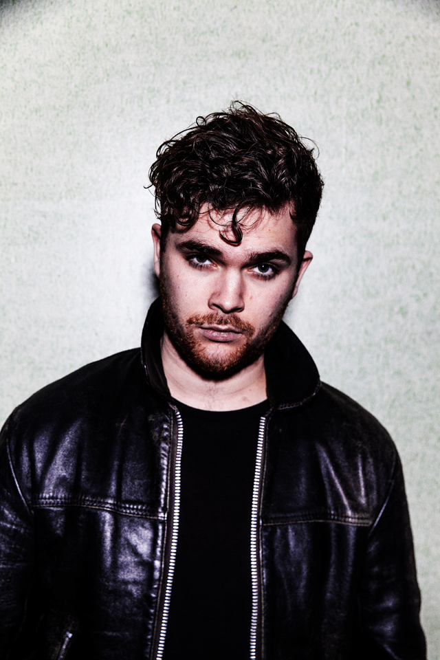
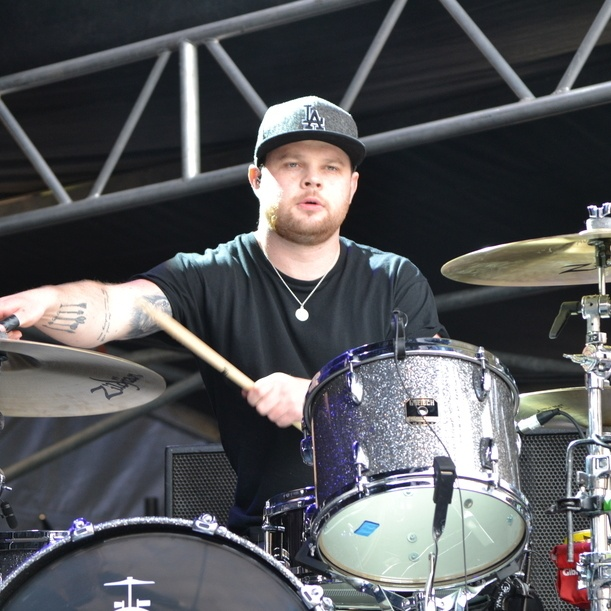

Royal blood – brytyjski duet rockowy pochodzący z Brighton założony w 2011 roku. Brzmienie zespołu przypomina klasyczny rock garażowy i blues rock.
| Muzyk | Główne instrumenty | Od kiedy w zespole | Zdjęcie |
|---|---|---|---|
| Mike Kerr | Wokal, gitara basowa | 2011 |  |
| Ben Thatcher | Perkusja | 2013 |  |
Rok wydania: 2014
Rok wydania: 2017
Rok wydania: 2021
Rok wydania: 2023